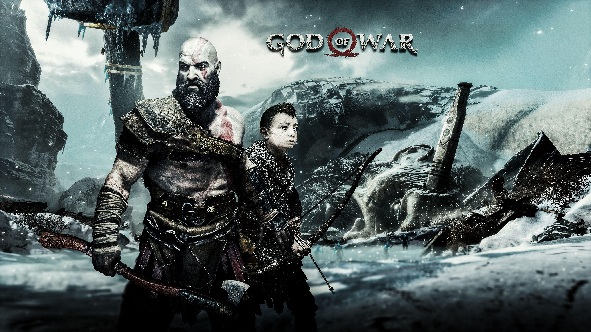

God of War (2018), often referred to as God of War 4, is a significant departure from the previous games in the series, both in terms of gameplay and narrative. The story follows Kratos, the former Greek God of War, who now lives in the realm of Norse mythology. He is accompanied by his young son, Atreus. The game begins with the death of Kratos’ second wife, Faye, and her final wish for her ashes to be spread at the highest peak of the nine realms. Throughout their journey, Kratos and Atreus face numerous challenges, including battling monsters and gods from Norse mythology. Kratos struggles to teach Atreus how to survive and control his anger while keeping his own godly past a secret from him. They encounter a mysterious stranger, Baldur, who is determined to kill Kratos. As they travel, Kratos and Atreus develop a deeper bond, and Atreus learns about his divine heritage. The game explores themes of fatherhood, redemption, and the struggle to overcome one’s past.
